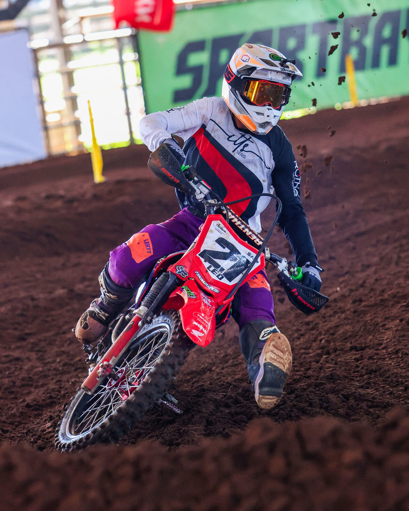
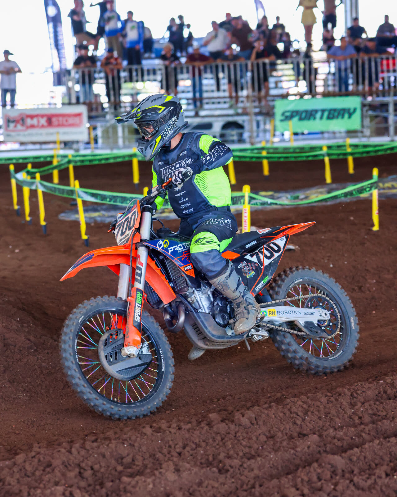
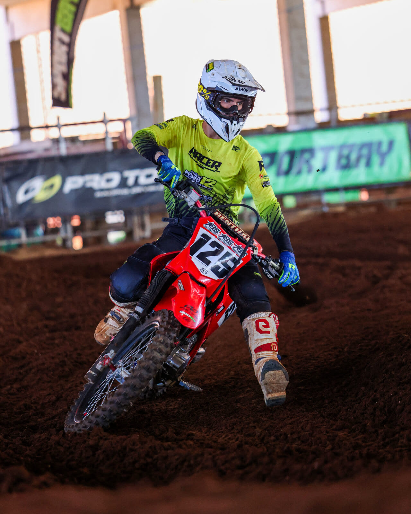
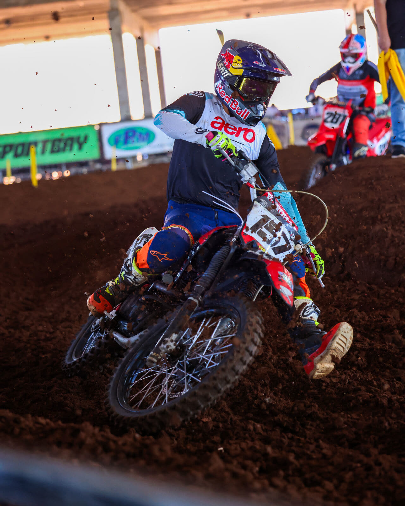
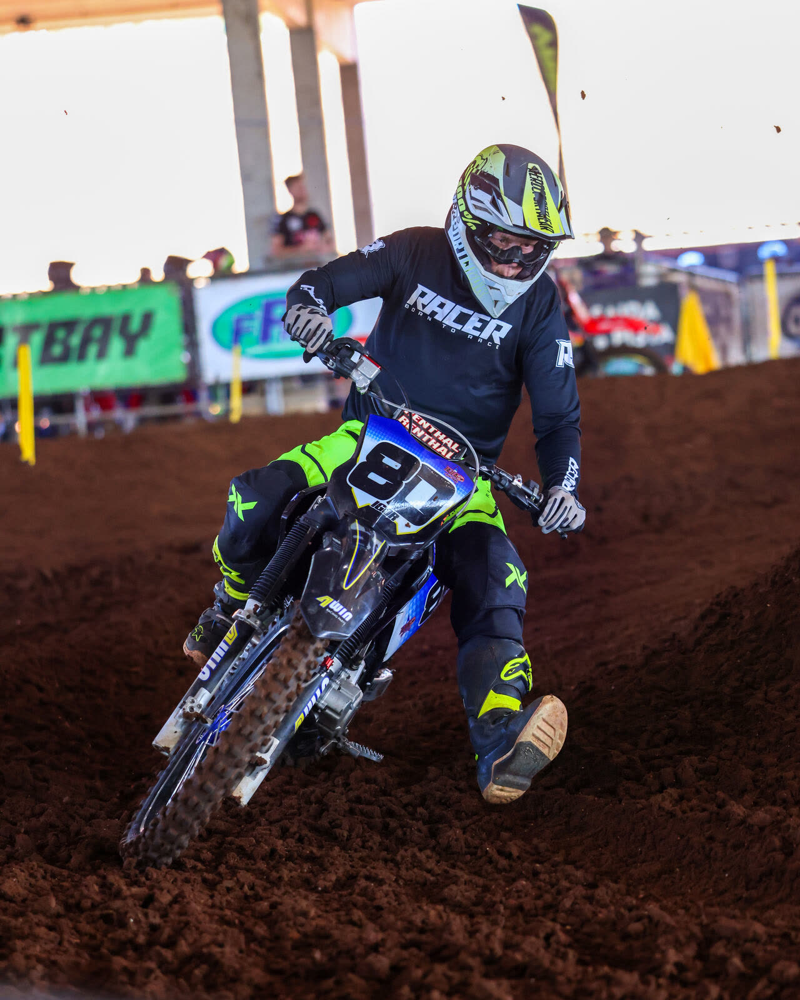

Resultados para a Sportbay
Sua marca esteve em cada curva, em cada largada e em cada tela.
Em Castro, o Arena Velocross e o Duel Kings colocaram a Sportbay diante de 3,2 milhões de contas no Instagram, cerca de 10 mil pessoas no Parque de Exposições Dário Macedo e 79 mil espectadores nas transmissões ao vivo. Veja onde ela apareceu.
340 inscritos · Arena Velocross
97 pilotos · Duel Kings

O fim de semana em números
O retorno, em números.
100% orgânico · últimos 30 dias
3.228.605
usuários alcançados no Instagram
Alcance totalmente orgânico, sem anúncio pago.
79.620
usuários nas duas transmissões ao vivo
60.468 no Arena Velocross + 19.152 no Duel Kings, no YouTube.
≈10 mil
pessoas no Parque Dário Macedo
Público de todo o fim de semana, em Castro/PR.
340
inscritos no Arena Velocross
Pilotos e famílias com a marca na cara.
97
participantes no Duel Kings
50 metros de disputa e uma marca no pórtico.
2
eventos, 1 fim de semana
Dois públicos, duas transmissões, uma só Sportbay.
Drone · Castro/PR
A estrutura que sustenta a sua marca
Um palco pensado para ser visto.
Do alto dá para ver o tamanho da operação: pista coberta, arquibancada, boxes, stands e acesso de público. A Sportbay ocupou os pontos onde o olhar do piloto, do público e da câmera passa o tempo todo.
- Pista indoorFaixas e fitas verdes ao redor da pista, visíveis da arquibancada e da transmissão.
- Pórtico do DuelMarca nas laterais do portal de LED, junto da largada.
Sportbay na pista
Onde a sua marca apareceu.
Fotos do fim de semana, com a presença da Sportbay marcada em verde. Use o botão para ver as fotos limpas.
Fotos: pista do Arena Velocross, Castro/PR
Sportbay

Faixa
Sportbay
Sportbay
SportbayOnde ela apareceu
- Faixas ao redor da pista
- Fitas verdes de balizamento
- Pórtico de LED do Duel Kings
- Transmissão ao vivo no YouTube
Duel Kings · 97 participantes
A largada do Rei da Reta tem a Sportbay ao lado.
No portal de LED por onde os pilotos entram na reta de 50 metros, a marca da Sportbay aparece nas duas laterais e na coluna que fica ao lado do pórtico. Todo piloto, toda bateria e toda largada passam por ali.
Logo verde no lado esquerdo e direito do portal, sob o telão.
Coluna com a marca na vertical, em foco na largada.
Presença repetida em cada bateria, da primeira largada à final.
Largada · Duel Kings
Ao vivo no YouTube
Quem não foi a Castro, viu a Sportbay.
As duas transmissões levaram a marca para a casa do público, com as provas e os desafios do fim de semana.
Duel Kings
19.152 usuários na transmissão da Sportbay Assistir à transmissão79.620usuários somando as duas transmissões, mais 3.228.605 contas alcançadas no Instagram, sem anúncio pago.
Próxima etapa
Saia na frente.Campina Grande do Sul, 27 e 28 de novembro.
Maior arenaA maior arena da América Latina, com pista coberta e capacidade para mais de 5 mil pessoas.
Uma etapa, muita audiênciaMais uma etapa do Arena Velocross, o evento que fecha a temporada off road e vale título nacional.
Sportbay no topoContinue nos pontos onde a marca já foi vista: faixas na pista, pórtico do Duel Kings e transmissão ao vivo.
Garantir a Sportbay em Campina
Amanda Cavalcante, WhatsApp:
(41) 99533-1797